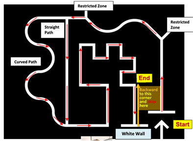
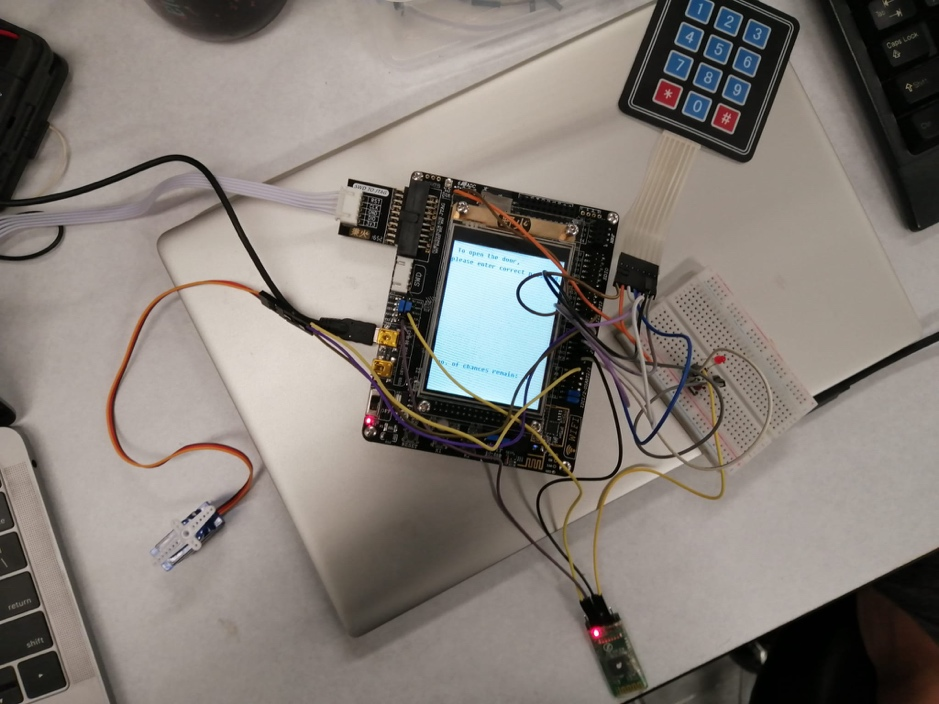
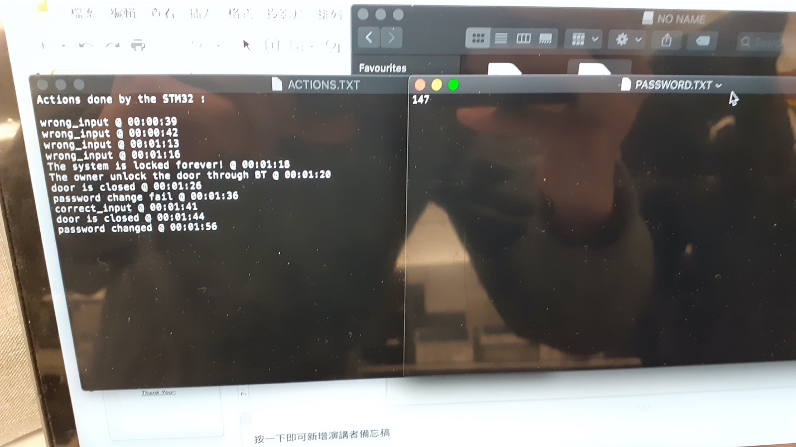
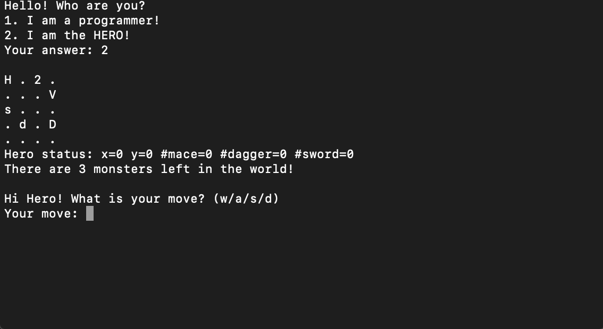

Arduino with mini-robot car
In this project, we used Arduino to control a mini-robot car following the tracks below.

|
Case |
Left sensor |
Right sensor |
Bumper sensor |
Left motor rotation |
Right motor rotation |
PWM |
Car movement |
|
1 |
1V |
1V |
1V |
forward |
forward |
140 |
forward |
|
2 |
0V |
1V |
1V |
backward |
forward |
100 |
Turn left |
|
3 |
1V |
0V |
1V |
forward |
backward |
100 |
Turn right |
|
4 |
0V |
0V |
0V |
Backward |
Backward |
140 |
backward |
Smart Door Locking System
In this project, we used Keil and CubeMx to implement a smart door locking system using STM32. The motor represented the door. If user typed in correct password through the keypad, the door opens and the green lights on, else, the door remained close and red light on. If 3 consecutive wrong inputs were detected, the buzzer produced noise for warning and sent alert message to the phone of owner though bluetooth.


CubeMx Configuration
⬩ GPIO
⬩ PB0, PB1, PB5 -> RGB LED
⬩ PC0, PC1, PE5, PE6, PA4, PA5, PA6 -> keypad
⬩ RXD(PA9), TXD(PA10) -> Bluetooth module HC-05
⬩ PB6 -> motor
⬩ [reserve PC8 to PC12 for SDIO]
⬩ Enable Real Time Clock (RTC) -> get the time
⬩ Enable FSMC -> LCD
⬩ Enable TIMER-> rotation of the motor
⬩ Use TIM3 and TIM4 to generate PWM
⬩ Pulse = 900__close the door, Pulse = 300__open the door
⬩ Enable USART1 -> make use of the HC-05
⬩ Enable SDIO -> make use of the Micro SD card
Monster Matrix Game
In this project, we used the concept of linked list from C++ to implement a monster killing game.

Upper case characters represent different type of monsters
Lower case characters represent different type of weapons
Integer number represents the number of things(monster / weapon)
Different monster can only be killed by specific weapon
Kill all the monster to win the game
Chatroom implementation
In this project, we used C language to perform a socket programming to implement a chatroom, a communication plateform for multiple users.

Support multiple clients chat at the same time
Support broadcast message and private message
Each user has a unique name, Same name error checking
Final Year Project
In this project, we use python to implement the GAN algorithm for image deblurring and train our model with the GOPRO dataset. Then, we test our model by recording the execution time for deblurring per image on a normal CPU. Next, we accelerate the algorithm using FPGA from PYNQ-Z2 board to see how much can be speeded up by comparing the execution time.